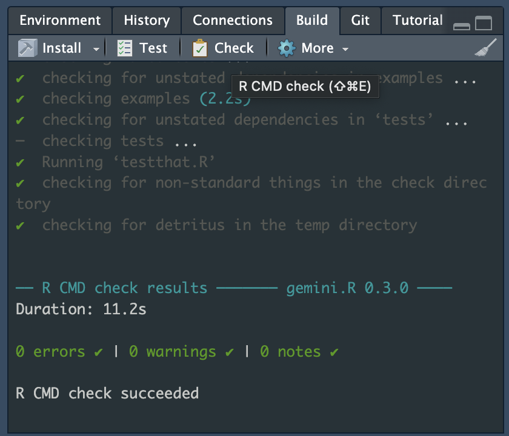
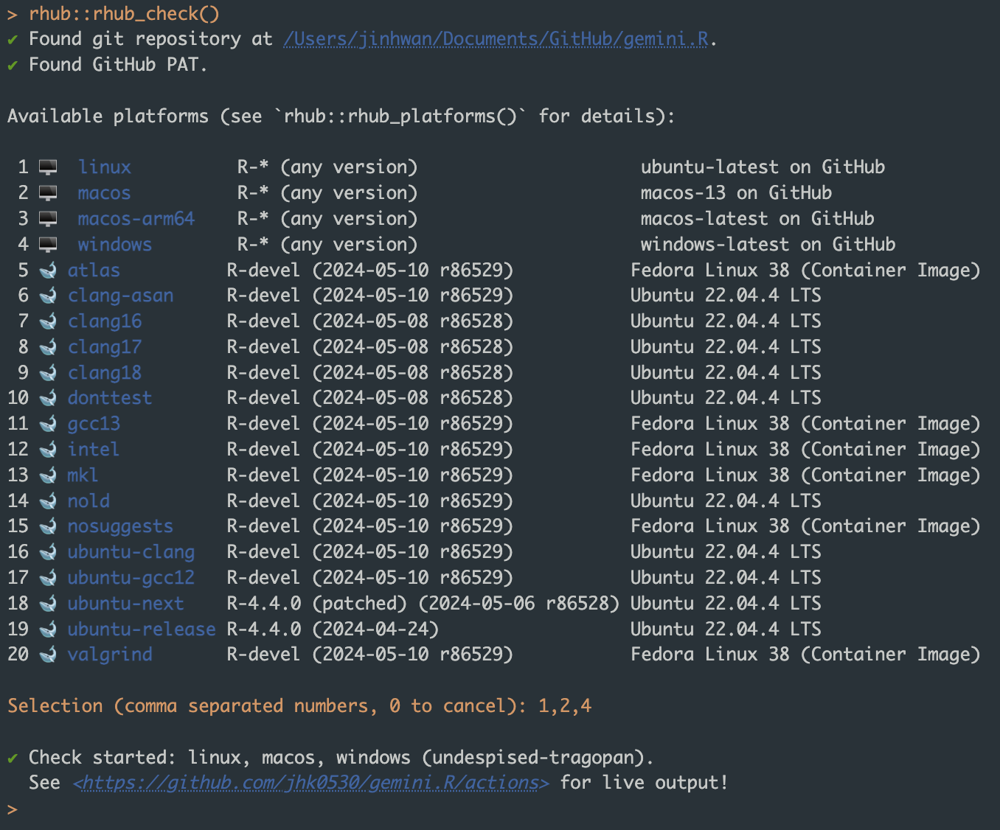
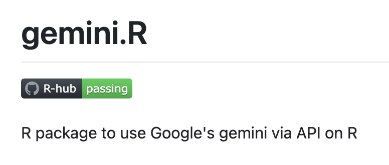

R CMD CHECK
R CMD CHECKは、Rパッケージを開発した後に「正常に開発されているか」を検証するために、約50以上のチェックリストを実行するプロセスです。関数の使用方法が適切に記述されているか、関数のパラメータが適切に記述されているかなどが含まれます。
もちろん、R CMD CHECKを厳密に実行せずにgithubを介してパッケージを配布して実行することに問題はありませんが、パッケージのエラーを最小限に抑え、安定したパッケージをユーザーに提供できることが証明された後に、CRANなどの公式リポジトリを介してのみパッケージを共有するべきです。
この投稿では具体的な内容には触れませんが、興味がある場合はHadley WickhamのR Packagesを参照することもできます。
いずれにせよ、R CMD CHECKは、devtoolsパッケージを使用してRパッケージを作成した場合、devtools::check()関数またはRstudioのCheckボタンを使用して実行でき、警告、エラー、ノートなどで修正が推奨される問題を確認できます。

しかし、R CMD CHECKの特徴の1つは、パッケージを開発しているPCの環境を基準にチェックを行うということです。つまり、下の画像のようにmacOS（Apple clang）環境でパッケージがテストされ、実行が保証されていますが、ユーザーのOSがmac以外のwindow、linuxなどの場合、パッケージが正常に動作しない可能性があります。
CRANは基本OSを指定していませんが、Windows、macOS、linuxの少なくとも2つのOSでのテストに問題がないことを要求するため、Rパッケージの開発にはさまざまなOSでのテストが含まれることがよくあります。
このため、さまざまなOSハードウェア、つまりWindows PC、mac、Linuxサーバーがあればベストですが、このようなケースは多くなく、ほとんどの場合、Githubアクション、AppVeyor、Travis CIなどのCI/CDサービスを使用してさまざまなOSでのテストを実行します。
Github action
この投稿では、参考としてGithubアクションを紹介しますが、他のサービスでもプロセスはほぼ同じです。
Githubアクションは、Githubが提供するCI/CDサービスで、Githubが提供するさまざまなアクションを使用して（Githubが提供するサーバーでコマンドを実行することにより）、自動化されたテスト、ビルド、デプロイなどを実行できます。

アクションは、サーバーにRをインストールしたり、Rパッケージをインストールしたり、R CMD CHECKを実行したりするなど、ymlファイルで構成されたコマンドのコレクションと考えることができます。
R-hub actions, R-lib actions 参考までに。

r-hub2
r-hubプロジェクトは、Rコンソーシアムのプロジェクトの1つであり、R開発者がRパッケージをより良く開発できるようにすることを目的としています。 さまざまなOSでのテストを実行することを支援することもその1つで、上記で言及したGithub Actionを開発したり、インフラを提供したり、コミュニティが問題を解決するのを支援したりする役割があります。
しかし、R-hubプロジェクトは最近、このGHAを設定するのを助けるためのRパッケージ、rhubを開発してリリースしました。
公式ブログで説明されているように、すでにGithub Actionを使用していなくても、さまざまなOSでR CMD CHECKを簡単に実行できるGithub Actionを設定できます。
最初にやるべきことは、もちろんrhubパッケージをインストールすることです。 ここで、pakは、install.packagesやremotes::install_githubなどの従来のパッケージインストール方法を統合し、さまざまなソースからRパッケージをインストールするための関数を提供することを推奨しています。
pak::pkg_install("rhub")rhubパッケージは、公式バージョンが2であるにもかかわらず、rhub2ではなくrhubとしてインストールおよび実行する必要があることに注意してください。
この投稿では、それをrhubと呼びます。このrhubパッケージを実行するには、以下の3つが必要ですが、Rパッケージを開発してgithubに共有した経験がある場合、新たに準備する必要はありません。
- githubアカウント
- Rパッケージをアップロードしたリポジトリ。CRANを目指す場合は、もちろんPublicである必要があります。
- Github PAT（Personal Access Token）、githubから取得でき、
gitcredsという別のRパッケージを使用してもかまいません。
Setup
rhubパッケージを終えた後に最初に行うべきことは、Rパッケージディレクトリでrhub_setup関数を実行することです。この関数はディレクトリ内のgitリポジトリを認識し、Github Action用のymlファイルを生成します。
以下の画像では、以前に作成したgemini.Rパッケージを例にしています。

すべてがうまくいけば、rhubパッケージは次のステップについても案内してくれます。つまり、追加されたymlファイルをgithubにコミットして更新を反映させた後、rhub_doctor関数を実行します。
Doctor
rhub_doctor関数は、Github PATが正しく設定されているかどうかを確認します。後で紹介するrhubのrhub_check関数は、Rstudioのコンソールで言及されたGithub PATを使用してGithub Actionを手動で実行するため、PATの設定を確認する必要があります。
Github PATは 「https://github.com/settings/tokens 」のリンクから作成できますが、repoとworkflowのパーミッションを付与して作成した場合に限ります。

RstudioでGithub PATを設定する方法は、credentialパッケージのset_github_pat関数を使用します。 リンク
rhub_doctor関数が正常に動作した場合、残りの作業はrhub_check関数を実行することです。

Check
前のステップは、この関数のための準備作業であったと言っても過言ではありません。

rhub_check関数は、githubリポジトリとPATを認識し、次にR CMD CHECKを実行するOSを入力値として受け取ります。
この時、Windows、macOS、Linuxに加えて、画像のように（rhubプロジェクトで提供される）さまざまなOSを数字とカンマで区切って選択することができます。
関数を実行した後、GHAページに接続できるリンクを提供し、進行状況を確認できます。

最終的に、rhubとGHAを使用してテストパスをリポジトリにバッジとして追加すると、以下のようになります。

バッジアイコンをreadmeに追加するには、次のように書く必要があります。
使用した例では、
このGithub Actionを介したR CMD CHECKには時間がかかるため、開発中のPCでR CMD CHECKを完了した後に実行することをお勧めします。
もちろん、rhubはgithubやpublicリポジトリ以外の場合についてのガイダンスも提供していますが、これはほとんどのRパッケージ、特にCRANとはあまり関係がないため、別途説明しません。
Summary
この投稿では、Rパッケージ開発者が Github Actionを使用するためのrhubパッケージを紹介しました。これにより、Rパッケージ開発者はローカル環境だけでなく、さまざまなOSでのR CMD CHECKを通じてパッケージエラーを最小限に抑え、より良いパッケージを作成することができます。
詳細な情報は、rhubブログでも確認できます。
DeepL TranslatorおよびGithub Copilotで翻訳されたコンテンツ
Reuse
Citation
@online{kim2024,
author = {Kim, Jinhwan},
title = {Rhub와 {Github} {action를} {활용한} {OS별} {R} {패키지}
{검증}},
date = {2024-05-13},
url = {https://blog.zarathu.com/jp/posts/2024-05-13-rhub/},
langid = {en}
}